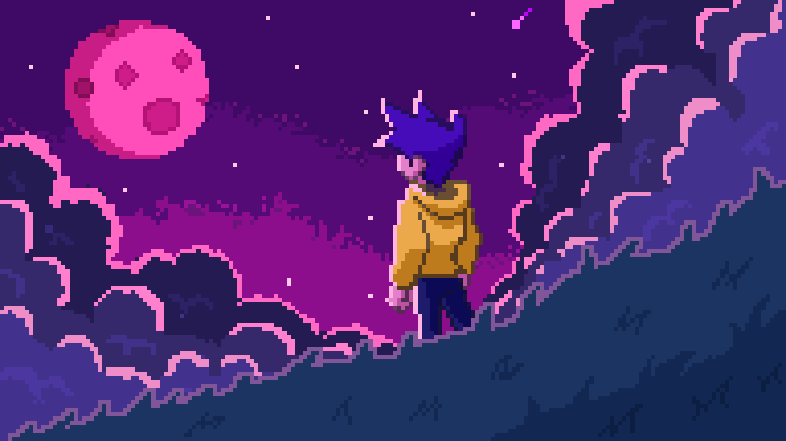

Pixel Art is an artistic design created digitally based on pixels, using simple image editing tools. Although it is true that it is not a simple technique, since the color palette and the use of them is very important to create what is intended correctly.
Video game design is one of the most complete branches of the digital entertainment sector, both because of the (almost endless) possibilities it offers, and because of the styles that can be used.
One of them is 3D Pixel Art, such as Minecraft Pixel Art, a unique and peculiar style, which we explain in detail below and, in addition, we tell you how to learn to master it.
From a pixel a poem
Joan Brossa always appealed to the principle of his admired Fregoli: «Art is life and life is transformation».
Cloe Masotta takes to the streets with this premise because at any moment an object, a text, a shadow or
a color can appear that attracts her and that she can capture with her mobile phone.
The framed reality is transformed and offers a poetic game. Nothing is what it seems.
By Cloe Masotta
Apps to make Pixel Art